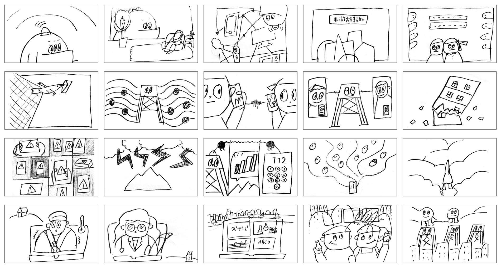

POPO
波波與基地台
把電磁波擬人化為「波波」的角色，來告訴大家關於電磁波與基地台的科普小知識
Animation Director, Story board, Illustration, Motion Design
Story Board

Style Frame


把電磁波擬人化為「波波」的角色，來告訴大家關於電磁波與基地台的科普小知識
Animation Director, Story board, Illustration, Motion Design
Story Board
Style Frame